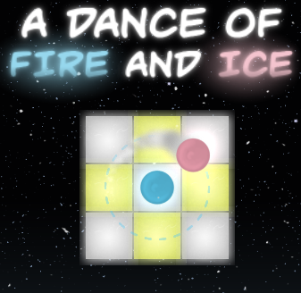
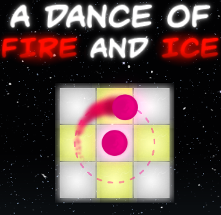
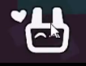

1.A Dance of Fire and Ice 화면에서 TRANSRIGHTS를 입력하면 공이 연한 파란색과 분홍색으로 바뀐다.
2.A Dance of Fire and Ice 화면에서 PRACTICE를 입력하면 회면이 반짝 거리며 연습 모드를 플레이 할수 있다.
3.A Dance of Fire and Ice 화면에서 코나미 커맨드(오른쪽 화살표x2 아래쪽 화살표x2 오른쪽 왼쪽 화살표x2 B A 엔터)를 입력하면 무지개공을 얻을수 있다.
4.레벨 에디터에 있는 왼쪽 아래에 있는 토끼를 쓰다듬어주면 좋아한다.
